StateGraph：长期 Agent 记忆中的依赖感知状态修订
论文 A State Change Is Local, Its Consequences Are Not: Dependency-Aware State Revision for Long-Term Agent Memory 研究上游事实改变以后，下游信念、计划和待执行动作如何同步修订。作者为 Yiqi Wang、Tongyuan Zhao、Jiaqi Zhang、Yiqun Duan、Zhangkai Wu、Mingkai Zheng、Taotao Cai；一作主机构为南昆士兰大学，合作机构包括江苏大学、Uploading Inc.、悉尼大学与南方科技大学。2026 年 11 月 2 日公开，11 月 4 日核验。论文入口：arXiv:2611.02912。本轮未核验到独立代码或项目入口，不能据附录模块名认定已经开源。
当上游事实发生变化时，记忆系统可能只修正被直接矛盾的那条记录，却继续信任依赖它的信念、计划与动作。需要识别哪些下游状态已经失去支撑，同时保留仍有独立证据、仅弱依赖或只受局部条件影响的状态。
1. 背景和问题
长期 Agent 的记忆质量不能只用“是否找回用户曾经说过的话”衡量。时间安排、资源可用性、订单地址和权限会不断改变，历史记录需要保留，当前行为又必须服从最新有效条件。这带来了两个不同任务：识别新消息直接更新或否定的旧断言，以及找出没有被新消息直接提到、却因依赖旧断言而需要重新判断的结论。StateGraph 重点处理第二个任务。它没有把所有旧记忆一概视为错误，而是追问一条结论在当前时点究竟还有没有成立依据。更长上下文、更强检索并不自动等价于可靠状态更新，因为生成模型可能看见新旧记录，却仍沿旧的推理路径行动。
论文开头使用会议安排例子。用户最初说周五下午有空，系统据此判断下午三点可以开评审会，并准备确认会议。后来用户说预订了周五下午的航班，新消息直接推翻“周五下午有空”，却没有字面否定“三点评审可行”或“发出确认”。只对相似记录做替换时，旧时间状态可能已标过期，计划却仍标当前有效。回答可以正确复述航班，同时继续执行错误安排。问题由此从事实检索扩展到支持链管理：事实、推导结论与动作前提需要可追溯连接。只要最后一次行动还以旧结论为依据，单条记录更新就没有完成业务意义上的修订。
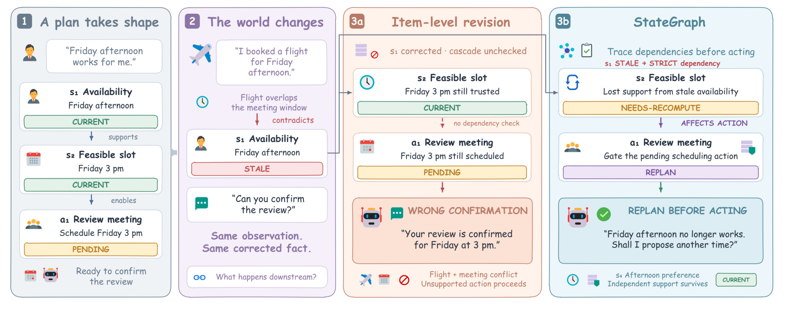
Figure 1 依次展示最初计划、新出现的航班、只做单条修订的失败，以及沿依赖链修订后的行为。左侧三层不是独立事实：“有空”支撑“时段可行”，时段可行又约束“确认会议”这个动作。中间红区指出，即使系统已知道有航班，只要后两项仍是当前状态，就可能产生流畅的错误确认。右侧把时段改为需要重新计算，并将动作送回重新规划；下面另设独立支持分支，说明存在替代时段或新依据时，不应机械删除整个计划。读图要将“更改记录”和“阻止过时前提继续驱动行为”分开；后者是本文要补齐的能力。图中的航班、会议和用户回答都是原始问题示例，不是在线实验记录，也不能据此计算动作成功率。
已有记忆路线各自解决部分问题。向量检索以语义接近程度提供片段，摘要记忆压缩长期对话，图记忆保留实体联系和时间区间，上下文分页处理有限窗口的存取。论文尤其讨论 CUPMem 的写入时状态裁决，以及 STALE 对隐含冲突的评测。这些能力可以判断旧记录被覆盖，却不一定恢复“为什么某个计划依赖这条记录”的支持关系。本文沿用直接修订思想，把增量贡献放在依赖发现与验证，而不声称首次提出图结构或信念修订。经典真值维护和信念修订通常接收显式依赖，StateGraph 则需要从自然语言历史恢复依赖；两者解决的是不同输入条件下的相近逻辑问题。
最难的地方不是图上广度优先搜索。两个状态谈论同一会议，可能只是主题相关；没有共享词汇的两个状态，却可能有严格前提关系。航班与评审安排的连接来自时间冲突，而非字面匹配。“用户偏好安静环境”可能影响推荐理由，却不决定某次预约是否有效。若把所有相关边当作支持依赖，错误就会从一个节点扩散到整片记忆。论文因此分为严格依赖、弱依赖和无依赖，让候选发现争取覆盖，再用反事实问题筛选。边的方向、适用时间和来源也必须保留，否则系统无法判断应该撤回结论还是仅降低确信程度。这是结构化记忆比简单相似检索多承担的责任。
替代支撑同样关键。会议最初依赖某位参与者周五有空，后来也可能获得允许代参会的新确认；旧支撑消失，不等于整个计划无效。一个状态可以由多条独立路径维持，修订时必须检查当前证据是否足够。时间例外则可能只作用于一周，不能把通常规律永久删除。过去有效的记录仍可用于历史问题，当前动作却需要新的有效前提。单一“保留或删除”操作无法表达这些差别，这也是引入五种状态的动机。错误撤销与遗漏撤销都要评估，否则系统可以通过删除全部记忆虚假解决过期问题，代价是丧失原本正确的知识与任务连续性。
本文直接实验对象是长期记忆 Agent，没有验证点击率模型。可迁移的问题存在于用户约束、服务可用性和推荐计划之间：旧地址、旧预算、已撤销权限可能改变候选过滤、解释和动作。但这些只是工程判断，不能把小规模记忆成绩写成推荐业务收益。更合适的阅读目标，是理解来源、适用范围和依赖如何参与决策，并把“记住变化”与“行为遵守变化”分开评估。前者检查回答是否引用最新内容，后者还要检查已有计划和默认假设是否失效。StateGraph 将第二层能力显式化，其价值和额外推理成本应一起判断，而不是仅依据一个更高的总分。
评测这种能力还要控制一个容易投机的方向：系统若把变化附近的所有记录都撤销，下游错误可能减少，却会损坏很多不相关事实。论文专门设置弱依赖、独立支撑与临时例外等难负例，要求一部分可达状态继续有效。另一方面，动作失败不一定来自记忆状态错误，也可能来自规划或工具执行；如果不分开记录，就无法知道机制到底修好了哪一步。本文当前没有发布汇总动作结果，因此即使任务定义覆盖动作后果，我们仍只能对状态修订给出较强判断，对行为端只能读案例。把任务定义、实际测量与期望应用区分开，有助于避免将一个合理设计提前当作成熟安全方案。
还有一个重要前提是可追溯来源。自然语言摘要经多次压缩后，可能只剩“可以安排会议”，原本支持它的消息与时间范围已经消失。此时模型无法可靠区分直接观察、推测与旧计划。StateGraph 要求先提取原子断言并保留出处，这既增加数据组织负担，也限定了适用场景：若输入来源本身不可识别或历史已严重丢失，后续图传播无法补回不存在的证据。
2. 方法
2.1 状态表示与直接修订
StateGraph 的有向图保存证据、状态与待执行动作。状态节点不只是一段自然语言，还记录实体、属性、值、时间范围、条件范围、来源证据、置信度与当前状态。论文式（1）表示为：
符号解释：$e$ 是实体，$a$ 是属性，$v$ 是值，$\tau$ 和 $\kappa$ 分别为时间与条件范围，$\pi$ 是支持证据集合，$c$ 是置信度，$\sigma$ 为状态。来源不是展示用的附加说明，而是后来判断独立支撑的输入。系统用规范槽位标识追踪同一逻辑状态，以不同断言版本保留历史，属性更新不会抹去旧版本及来源。新消息经提取匹配后，归为一致、重复、更新、显式冲突、隐含失效、临时例外或不确定，并产生直接失效的种子。
五种状态承担不同使用契约：当前状态可断言为事实；失去依据的状态停止复用；不确定状态需要澄清；历史状态用于历史查询；派生结论在输入改变后需要重算。论文式（2）为：
符号解释：$\sigma$ 是状态元组的最后一项，五个名称分别为当前、过期、不确定、历史、待重算。只有 CURRENT 可以直接当当前事实使用。 “过去是真的”和“现在无依据”因而可同时记录。边也分为证据支持、更新、否定、派生、前提依赖和动作影响；本文关注后三类，方向统一为前提指向依赖项。只看名称容易误把 DEPENDS-ON 画反，实际约定必须据论文的前提到依赖项说明。
直接与级联修订的范围必须分开。论文式（3）至（5）的主要关系为：
符号解释：$S_t$ 为状态集合，$x_t$ 为新证据，$D_t$ 为被直接裁决的状态，$I_t$ 为其中失效的种子，$R(I_t)$ 是沿依赖可达的节点，$\mathrm{Affected}(I_t)$ 是真正需要修订的下游状态或动作。最后的包含关系可能严格成立，因为可达节点仍可能有独立支撑，或不在改变的范围内。可达决定要检查谁，不直接决定谁失效。 系统输入新增观察与已有图，输出保留来源的更新图，没有训练新基础模型，也不更新骨干参数。
2.2 依赖候选与反事实验证
发现模块用六类线索提出有界候选：共享实体或任务、显式推导、工具执行来源、动作前提、共同受限时间以及“因为”“所以”等语言连接。模型请求最多提出六十四对无序端点，随后补入结构候选并去重，六十四不是最终合并池的上限。每对候选要检查两个方向和端点类型，不明确或缺证据的关系先拒绝。相似性只召回候选，不认证依赖。 相对全状态两两判断，它将较贵的方向与验证推理集中到有限集合，但如果发现阶段漏掉真边，后续无法恢复该链。
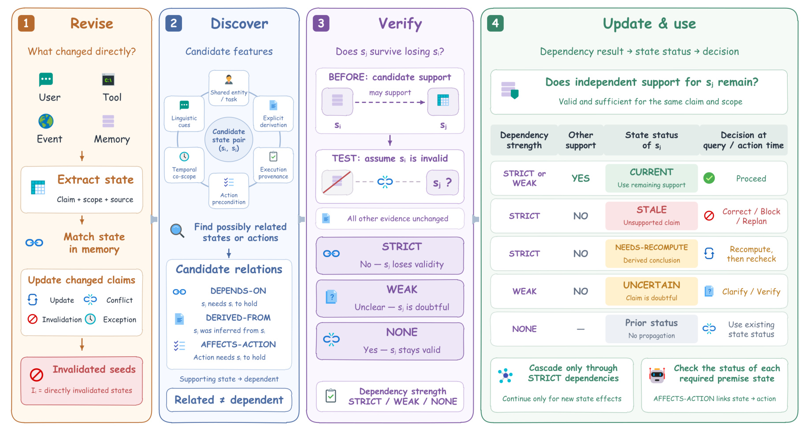
Figure 2 四区按执行顺序组织。先抽取、对齐状态并产生直接失效种子，再寻找候选状态或动作，然后固定其他证据、移除前提并询问下游是否仍成立，最后结合独立支持和状态类型决定更新与使用。验证图是候选图的子图，说明提出边并不赋予传播权限。右侧还连接状态到行为：待重算的结论不能直接供动作使用，不确定结论触发复核，有独立证据则保留。图没有给每模块训练独立网络，展示的是同一骨干参与的多个受约束判断和代码状态转换。尤其需要区分验证时上下文和后来修订时出现的新证据，否则会误以为严格依赖与独立支持互相矛盾。框架的技术重心在候选边如何被证据约束，而非简单存入更多图连接。
反事实验证问：如果前提不再作为当前依据，而其他证据不变，下游是否仍成立？失去依据为 STRICT；前提有贡献，但移除后只是不确定，或已有独立支撑仍使其成立，为 WEAK；没有真正支持桥梁则为 NONE。系统校验强度与结果是否自洽，拒绝不相容判断。严格性只针对当时有限上下文，不承诺永远没有替代来源。修订时要重新检查证据，不能把过去的严格边当成永久逻辑定律。验证并不修改推理模型，而是用提示契约限制判断范围，保留关系类型、方向、来源和强度供后续代码使用。
独立支持要求当前有效、范围相容，并能在排除失败路径后完整支撑同一主张。重复陈述、节点自我引用和循环解释都不合格。某个候选在图上可达也不自动失去支持资格，关键是其依据是否独立，而不是有没有路径连到它。这里仍有明确局限：发现、验证和支持检测由同一模型完成，反事实提示不提供形式逻辑证明，相关错误可能穿过全部模块。它是更可检查的推理组织方式，不是免除模型幻觉的保证。
2.3 保守传播与前提感知使用
传播从种子广度优先遍历，逐边检查范围、强弱、替代证据和节点类型。严格依赖无支撑则标过期或待重算，弱依赖缺支撑只标不确定或降权，有独立支撑就重新锚定来源。论文条件失效闭包为：
符号解释：$s_i$ 为前提，$s_j$ 为经严格 DEPENDS-ON 边依赖它的状态，$\mathrm{AltSupport}$ 是当前同范围独立支持集合。此约束有条件、单向：要求无支撑的严格依赖项停止当当前事实，不要求一切可达项失效，也不保证边正确。算法维护根、路径和效果去重，只在新的状态或来源效果出现时继续；弱效果不覆盖强效果，弱依赖不延续级联。遍历无固定深度上限，附录检索深度与关系最大跳数属于不同设置，不能当传播截断阈值。
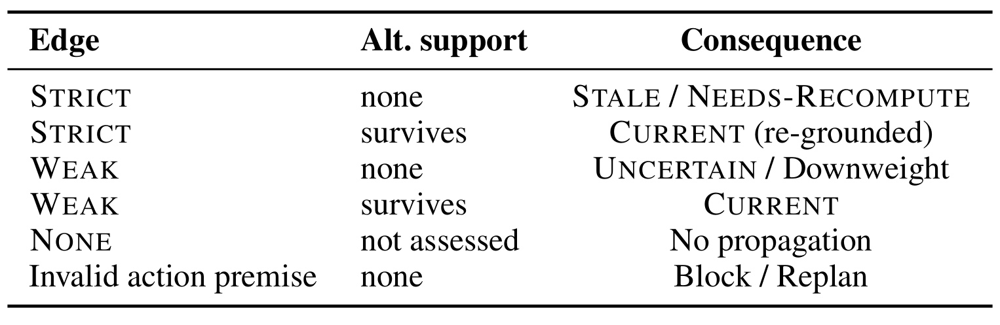
Table 1 第一列是边强度，第二列为替代支持，最后为操作。严格边无支持产生过期或待重算，有支持重新建立依据并保留当前状态；弱边无支持降低确信程度，有支持保持有效；NONE 不传播。末行将无效动作前提连接到阻止或重规划。这里没有“发现边就删除”的规则，也没把不确定当事实错误。派生数值待重算意味着不能复用旧结果，但新输入充分时可算新结果；阻止旧计划也不自动授权执行新计划。表头保留三个决策维度，可据此检查自己的状态机是否错误合并历史、弱依赖和重算义务。该表是方法规则而非实验结果，因此紧接传播机制解释，它的作用是定义可执行状态转移契约，而不提供某一规则胜过另一规则的统计证据。
使用门控先分当前查询、历史查询和动作请求，再提取问题预设前提，由代码检查状态、范围与动作资格。未来执行旧计划属于当前动作，不能借“历史”名义绕过；过期前提需用新证据纠正，不确定或待重算需澄清或推导。附录动作生成只提出有依据的重规划、阻止或询问，并不真的执行外部动作。复杂度上，关系判断约随候选数增长，每根遍历随可达节点与边增长，但独立支持检查成本另计，不能用线性图遍历冒充端到端调用成本。读写时状态契约与使用时门控缺一不可：前者保证旧结论不再被无条件信任，后者保证回答和动作实际遵守该决定。
3. 实验结果
3.1 基准与评测口径
StateChangeBench 是作者构造的五十个英文案例，意在共同评估直接更新、下游传播、无关状态保留与动作后果。每例包括历史、状态与依赖、新观察及查询或待执行动作；标注修订后状态、失效路径和深度、强弱依赖、独立支持与动作。零、一、二、三层及以上分别有十、十五、十五、十例。难负例十七个，动作后果三十六个；弱依赖、替代支持、时间例外等标签可以重叠，不能相加当互斥分布。评测覆盖五十例，不意味着每个指标都用五十例作分母，这是阅读整篇结果最需要固定的口径。
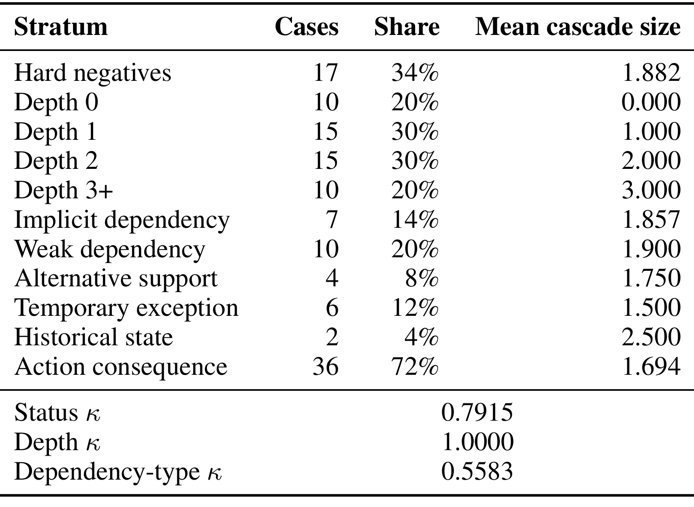
Table 9 上半部给出数量、占比与平均级联规模，下半部报告状态、深度和依赖类型的一致性。零深度没有下游失效目标，仍用于基准检查，却不进入级联总 F1；这解释了后文的十五、十五、十加权。弱依赖十例，独立支持仅四例，历史状态两例，小分层不能估计真实业务频率。三个 Cohen 一致性系数分别为零点七九一五、一和零点五五八三，最后一项说明依赖类型较难稳定标注。作者没有保留双标子集大小，因此不能解读成全部五十例都经同等复核；深度标注一致也不意味着支持关系没有歧义。案例作者遵守分层说明、未看方法，是减少直接迎合实现的措施，但仍需要独立案例和跨域评估验证。
统一骨干为 DeepSeek-v4-Flash，关闭思考，对比向量检索、时间衰减、摘要记忆、Mem0、Zep/Graphiti、A-MEM、CUPMem 与完整上下文。CUPMem 是共享框架重实现，不能当成原项目官方分数；另有 Mem0、CUPMem 接入级联的版本，保留提取与检索以隔离机制贡献。多个重复运行的计数汇总后算指标，但每配置运行次数未保留，无法恢复完整方差。无显著性检验，细微差距只能按点估计阅读。所有成本包括完整案例处理和回答，并非只生成最后答案的上下文长度。
依赖恢复与状态修订的分母不同。全部五十例的金标准边上，候选召回六十二点五、类型召回四十七点零、验证 F1 五十五点五、最终边 F1 六十一点七。它们不是同一任务依次升级的四个分数，不能相减得到某模块净贡献。Impact-F1 则只关心下游目标是否失效，一个边错误若未改变失效集合，可能不影响该指标。因此状态成绩高于边成绩不矛盾，却也不能掩盖结构恢复瓶颈。完整系统在直接更新准确率、过期检测、STALE 状态解析上为八十四点九、八十六点五、七十五点四；CUPMem 分别八十二点七、八十点三、七十二点一，说明直接修订已有较强基线，新增机制重点仍应看级联。
3.2 级联修订与一致性
附录式（6）和式（7）按深度汇总预测与金标准下游失效集合的交并关系，得到：
符号解释：$TP_d$、$FP_d$、$FN_d$ 为深度层 $d$ 内跨案例与运行汇总的正确、多余和遗漏失效计数，$F_d$ 是分层 Impact-F1，$F_{\mathrm{all}}$ 为表中总分。它是三个 F1 按案例数加权，既非五十例平均，也非所有层计数合并后的微平均。直接修订的根不计入失效目标，不确定、降权、范围例外和动作也不能用这个分数概括。
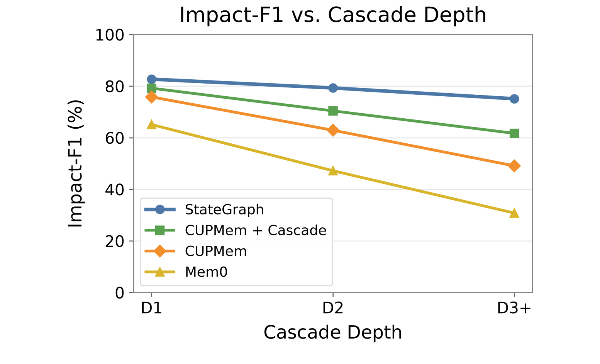
Figure 3 横轴为一、二、三层及以上深度，纵轴为 Impact-F1，对比 StateGraph、CUPMem、接入级联的 CUPMem 与 Mem0。所有方法都退化，StateGraph 从八十二点七到七十五点一，也不是无损传播；相对 CUPMem 的差距由六点九扩大到二十六个百分点。接入级联的 CUPMem 介于二者，支持显式传播也能帮助既有框架。不过各深度层内容不同，每层仅十至十五例，图不能证明把同一个真实任务加深就必然按该曲线退化。更稳妥的结论是这组控制案例中，显式验证和选择性传播伴随较小深度退化；作者提出的解释与消融相容，却没单独因果检验深度效应。纵轴不含动作执行，所以更高分也不能直接解读为真实 Agent 更安全。
从图中还可以看到，移植级联后的曲线并未与完整系统重合，说明传播之外的候选发现、反事实过滤和支持检查也可能影响结果。不能仅因深层差距更大，就认定模型已经具备任意长度逻辑链能力。真实长历史的图密度、循环与噪声都不同，后续应在固定内容、仅改变链深的配对设计中复核这项趋势。
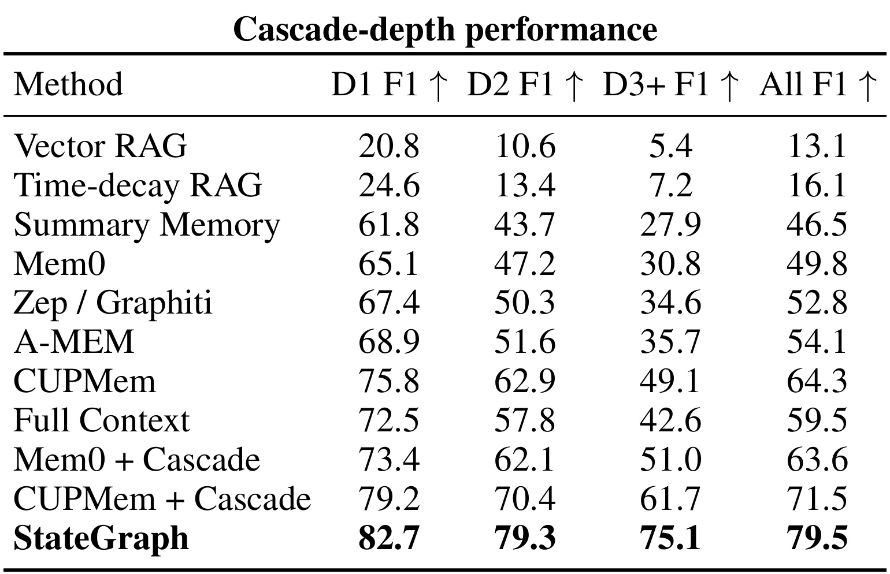
原 Table 2 两面板分居左右栏，中间穿插正文，这里拆开裁剪避免混入段落。左面板保留三深度及总分列，StateGraph 总分七十九点五，CUPMem 六十四点三，差十五点二个百分点；完整上下文五十九点五，说明把历史全部交给生成器未自动解决依赖修订。Mem0 接入级联从四十九点八到六十三点六，增加十三点八个百分点；CUPMem 接入后七十一点五，增加七点二个百分点。这些机制移植比跨框架比较更能说明传播的作用，但没有区间和复跑数量，仍不能排除实现细节与提示差异。表里最强点估计的任务范围是下游失效识别，不能扩大到计划完成率、用户满意度或所有长期记忆能力，更不能把相对变化和百分点差距混写。
另一个细节是总分不能从各方法的深度差简单平均得到，因为深度三及以上只占十例，浅两层各十五例。报告浅层和深层的原始百分比，比只报一个相对提升更能显示优势来源。完整上下文也有输入成本与生成设置，因而其落后只能解释为该协议下未解决问题，而非上下文方法原则上不可能修订依赖。
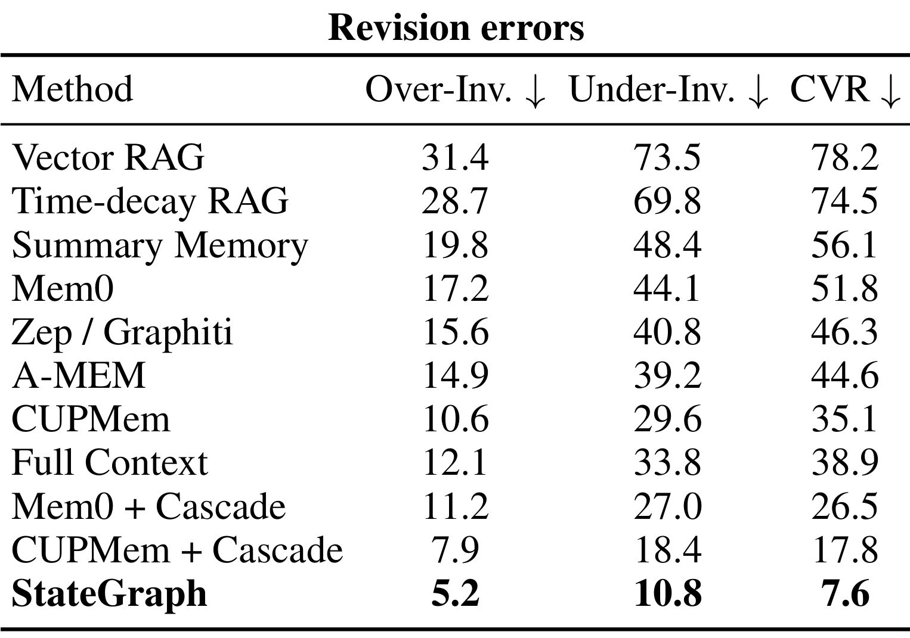
右面板是多余失效、遗漏失效和闭包违例率，三列越低越好。StateGraph 为五点二、十点八、七点六，CUPMem 为十点六、二十九点六、三十五点一，接入级联的 CUPMem 为七点九、十八点四、十七点八。多改与漏改共同下降，比仅报召回更支持选择性修订。多余失效分母是应保留状态，遗漏失效分母是金标准下游目标，两者不能直接相减当净收益；闭包违例率又是共同参考依赖边上的条件指标。七点六尤其不能换算成百分之九十二点四动作安全率，因为当前版本未公布动作决策汇总。残余错误也说明反事实与替代支持降低风险，却不提供正确性保证；应用时仍需观察误阻止带来的用户负担。
闭包评测使用共同参考边，不能仅检查各系统自己发现的边，否则空图会因无可检边虚假满足一致性。附录式（8）和式（9）将前提非当前且无替代支持的严格参考边记为激活集合：
符号解释：$c$ 为案例，$r$ 为重复运行，$\Omega_{cr}$ 为当次激活的共同严格依赖参考边，$\sigma_{cr}$ 为输出状态。分子是前提失效、无独立支持而下游仍当前的边，分母是全部激活边。虽参考集合相同，系统结果会改变激活条件，实际分母仍可不同；没有激活边的案例不贡献计数。该指标只检查该撤销却未撤销的单向条件，多余撤销要用另一列约束。单压低闭包违例不能证明整体修订正确，全部删除的系统也可能牺牲正确记忆来降低某类错误。
3.3 消融与计算成本
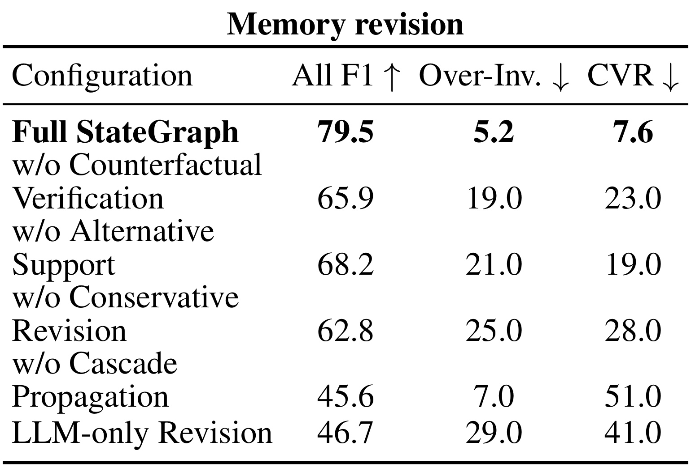
Table 3 删除反事实验证、替代支持、保守修订、级联传播，并加只用完整历史的模型修订。删验证使总 F1 从七十九点五降到六十五点九，多余失效从五点二升到十九；删替代支持后为六十八点二、多余失效二十一。把所有可达节点判过期的版本降至六十二点八，多余失效二十五，证明扩大失效范围会伤害应保留状态。删传播总分四十五点六，附录深层分由七十五点一到十七点九；纯模型总分四十六点七。各行是完整系统删一项，支持内部机制必要性，不等于证明其在任何实现里最优。原表仅含记忆修订面板，没有行动门控结果；附录 Table 8 扩展深度与计算成本，不能误读为已有完整动作消融。
消融里的替代支持判断尤其对应难负例保留：删除它以后，多余撤销升幅比遗漏撤销更显眼，符合设计动机。但对每一类难负例并无足够大的独立分层统计，不宜把总体改善当成所有例外类型均被解决。完整系统仍需在来源重复、部分支撑与临时范围之间判断，这些细节也可能受提示和骨干变化影响。
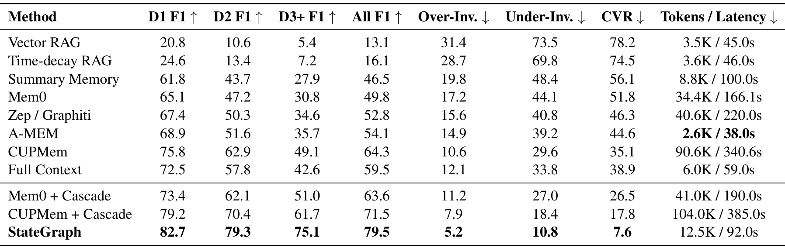
Table 6 将质量、token 与延迟并列。StateGraph 每案例约一万二千五百 token、九十二秒，向量检索三千五百、四十五秒，CUPMem 九万零六百、三百四十点六秒。相对 CUPMem token 约少到七点二分之一，延迟约为三点七分之一；相对向量检索却多约三点六倍 token 和两倍时间。A-MEM 仅两千六百 token、三十八秒，但级联总 F1 五十四点一。它改善了质量与某些重型基线的折中，没有成为最省资源方法。成本包括提取、验证、修订、依赖推理和回答，回答上下文预算一致不意味着总计算一样。表依赖作者共享实现与该骨干，非生产吞吐；不能将案例级数十秒延迟直接带入高并发实时推荐链路。
附录成本消融显示，删验证约一万 token、七十六秒，删传播约八千六百、六十四秒，纯模型七千五百、六十秒。完整系统相对纯模型多约百分之六十七 token，换取该基准明显更高的深层 F1。何时值得验证依赖，应结合动作错误代价决定；高影响权限或地址变更可能更值得启用，普通无下游事实更新未必需要同等预算。这是由成本表推导的设计判断，原文没有自适应开关实测。作者回答时最多选十个状态、每证据片段四百八十字符，最终辅助函数执行条数和总字符限制；配置虽另声明 token 上限，却不是用分词器硬裁。因此复现时应查实际代码而非只看配置名称。
3.4 公共基准与失败外推
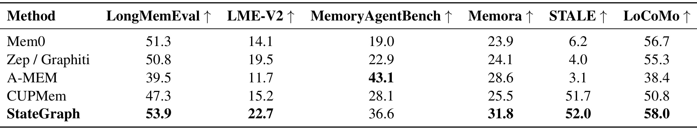
Table 7 使用状态回答准确率比较六公开数据集。StateGraph 在 LongMemEval、LME-V2、Memora、STALE、LoCoMo 上为五十三点九、二十二点七、三十一点八、五十二点零、五十八点零；MemoryAgentBench 三十六点六，低于 A-MEM 四十三点一。STALE 相对 CUPMem 五十一点七仅高零点三个百分点，LongMemEval 相对 Mem0 五十一点三高二点六。作者说多数点估计相当或较好，不宣称没有退化。不同列任务、覆盖与度量不同，不宜平均成通用记忆总分；微小领先也无显著性支持。MemoryAgentBench 负向说明依赖状态机不会在经验复用与各类长任务上自动占优。该表提供的是兼容性补充观察，而非严格无损保证。
可复现性缺口包括重复运行数量与双标子集大小缺失、无显著性检验、动作标签有但汇总结果未报告。同一骨干完成多个判断，不能排除相关错误共同接受错误边。候选召回六十二点五说明不少真依赖没被提出，即便已发现边传播全正确，也不能修复遗漏链。作者构造的短英文案例无法充分覆盖真实多用户来源权限、噪声工具、相互冲突证据和循环支撑。初步结果足以说明任务值得研究，但不足以承诺生产中避免所有过期前提行为。此处的谨慎并非否定方法，而是把机制证据、受控评测与可部署可靠性分为不同结论层级。
3.5 地址修改案例
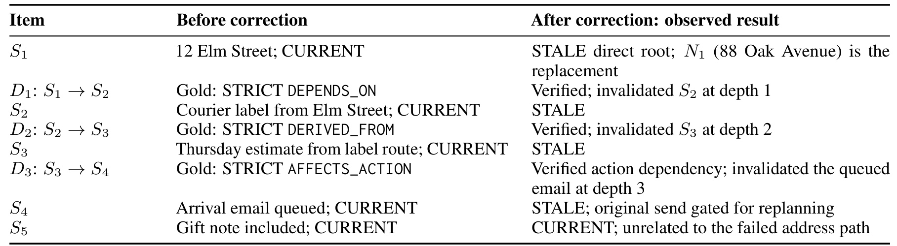
Table 10 是 SCB_006 的运行，不是额外在线实验。订单原发 Elm Street，快递标签依地址生成，周四到达估计依标签路线产生，随后邮件排队通知 Lena。用户改为 Oak Avenue 后，旧地址直接失效；标签、估计、邮件依次是三层下游目标。系统验证地址到标签的前提边、标签到估计的派生边、估计到邮件的动作边，然后逐路径检查独立支撑并撤销旧链。与地址无关的礼物便条仍当前，案例同时要求正确撤销和保留。最后，问题预设旧地址和周四到达，门控拒绝原动作并要求重规划。实现区分状态节点与待执行动作，表中保留基准命名。个例说明输出与该例标注一致，不能替代全案例动作正确率，也未展示新地址到达时间重算或真实新邮件发送。它特别适合用作状态机单例调试，却不应被包装为系统级安全证明。
该例还强调撤销目标与更新目标不同。新地址已被接受，并不自动知道新路线标签或新的到达日期；把旧估计改成待重算，比立即编造新的周四到达承诺更符合证据。礼物便条的保留则检验系统没有因为属于同一订单就全盘删除。可据这个案例制作多版本测试：给定独立物流确认应保留估计，没有确认则需要重算，从而检查支持条件是否真正参与决策。
4. 总结
4.1 我的判断
StateGraph 的价值在于把记忆评测从“旧事实有没有被替换”扩展到“失去依据的结论有没有停止驱动行为”。它将候选相关性、支持依赖与传播权限分开，通过弱依赖、替代支持和时间范围避免全部撤销。经典真值维护不是新概念，新增难点是从非结构化交互恢复支持边。反事实问题给出可操作判断，但仍是模型估计，需要与代码状态契约、来源检查和执行门控一起看。只复制一句提示，或给向量库追加图存储，均无法复现完整机制。论文也没有把所有依赖错误归因于检索，明确保留直接裁决、结构恢复和使用决策这些不同故障来源。
个性化推荐和助手可优先将用户约束与计划连起来：哪些过滤条件依赖地址，哪些解释依赖预算，哪些动作依赖确认。信息改变时返回受影响对象及证据，再决定重算或澄清。普通兴趣相似度不宜作为严格边，否则一次偏好更新会误删长期知识。独立支持需要来源和范围，缺这些元数据，再多连接也无法判断保留谁。这些是机制启发，原文没有点击、转化或真实业务实验；不能把记忆分数变成收益预测。更可行的第一步是选择具有明确前提和错误后果的少数动作，把撤销理由和保留理由都记录下来，衡量减少遗漏的同时是否引入过多阻止。
4.2 局限与后续跟进
需要保留四类风险。第一，自建五十英文案例、每层十至十五例与缺失复跑数量，限制差距稳定性的判断；独立扩展应报告种子、逐次结果和区间。第二，同一模型提议并验证边，相关错误可能同时骗过支持检测；可比较异构验证器、规则和人工审计，但要计算新增成本。第三，候选召回与最终边 F1 都不高，图不完备，状态指标领先不能隐藏恢复瓶颈。第四，动作汇总未发布，安全相关证据只及状态与个案，无法判断误阻止率和真实动作失误率。另有成本风险：九十二秒是案例级测量，不适合未经改造直接迁移到请求级低延迟服务。
跟进可分三层。先落实五状态契约，分别测当前查询、历史查询和执行旧计划，避免时间语义混淆；再固定直接修订，对比全相关边传播、反事实筛边和独立支持，明确增益来自何处；最后以地址修改、权限撤销、临时不可用和多来源确认建立真实任务集，共同报告多余失效、漏失效、动作决策与总成本。循环支撑、同义重复证据和范围收窄应另设难例，否则“独立支持”容易退化为找另一句重复描述。除质量外，还应记录用户被要求澄清的次数，因为保守策略可能用更多询问换较低误执行，单看准确率无法体现这项负担。本文的选择性修订原则值得借鉴，应先在自有数据验证决策与成本，再扩大传播频率和存储规模。
后续还应保留每次依赖判断的来源、干预问题和状态变更日志，以便区分模型认错边、支持范围错误与代码传播错误。日志应脱敏并遵守用户数据权限，不能为了复现实验复制私人交互到公开仓库。只有当错误可定位，成本可测量，才能判断需要改进候选发现还是验证策略，避免把所有失败都归因于模型不够强。